EDA
Zihan Zhou
2025-11-25
📊 Exploratory Data Analysis
Uncovering Patterns in NYC Citi Bike Usage
Data Loading
Load key packages and data.
##
## Attaching package: 'gridExtra'## The following object is masked from 'package:dplyr':
##
## combine##
## Attaching package: 'tsibble'## The following object is masked from 'package:lubridate':
##
## interval## The following objects are masked from 'package:base':
##
## intersect, setdiff, union## Loading required package: fabletools##
## Attaching package: 'scales'## The following object is masked from 'package:purrr':
##
## discard## The following object is masked from 'package:readr':
##
## col_factor## Registered S3 method overwritten by 'quantmod':
## method from
## as.zoo.data.frame zoo## Rows: 99986 Columns: 28## ── Column specification ───────────────────────────────────────────────────────────────────────────────────────────────────────
## Delimiter: ","
## chr (11): ride_id, rideable_type, start_station_name, start_station_id, end_station_name, end_station_id, member_casual, t...
## dbl (12): start_lat, start_lng, end_lat, end_lng, start_month, start_day, ride_duration_hours, distance_km, bearing_degree...
## dttm (4): started_at, ended_at, datetime_start_obj, datetime_end_obj
## date (1): start_date
##
## ℹ Use `spec()` to retrieve the full column specification for this data.
## ℹ Specify the column types or set `show_col_types = FALSE` to quiet this message.## Rows: 99,986
## Columns: 28
## $ ride_id <chr> "761B30A5B7B64236", "FBEA1249070FDC8C", "91A5019736D417E6", "F1CD7CB1CF230FBB", "31C8B256EFAD12A9…
## $ rideable_type <chr> "electric_bike", "electric_bike", "classic_bike", "electric_bike", "classic_bike", "electric_bike…
## $ started_at <dttm> 2025-09-01 11:38:30, 2025-09-01 19:38:52, 2025-09-01 13:55:21, 2025-09-01 18:10:23, 2025-09-01 1…
## $ ended_at <dttm> 2025-09-01 11:42:08, 2025-09-01 19:46:19, 2025-09-01 13:58:07, 2025-09-01 18:22:11, 2025-09-01 1…
## $ start_station_name <chr> "5 Ave & E 30 St", "W 74 St & Columbus Ave", "Cumberland St & Lafayette Ave", "Monroe St & Marcus…
## $ start_station_id <chr> "6248.08", "7230.10", "4428.02", "4467.03", "5329.03", "4157.10", "7606.01", "6912.01", "7260.09"…
## $ end_station_name <chr> "8 Ave & W 31 St", "3 Ave & E 72 St", "Lafayette Ave & Ft Greene Pl", "Pacific St & Troy Ave", "W…
## $ end_station_id <chr> "6450.05", "7028.04", "4470.09", "4122.03", "5989.02", "4231.04", "7606.01", "6912.01", "7023.04"…
## $ start_lat <dbl> 40.74598, 40.77857, 40.68753, 40.68672, 40.71755, 40.67944, 40.79819, 40.76674, 40.77967, 40.7466…
## $ start_lng <dbl> -73.98629, -73.97755, -73.97265, -73.93899, -74.01322, -73.96804, -73.96059, -73.97907, -73.98093…
## $ end_lat <dbl> 40.75059, 40.76994, 40.68700, 40.67686, 40.73805, 40.68048, 40.79819, 40.76674, 40.77051, 40.7340…
## $ end_lng <dbl> -73.99468, -73.96061, -73.97665, -73.93607, -73.99643, -73.96468, -73.96059, -73.97907, -73.98804…
## $ member_casual <chr> "casual", "casual", "member", "casual", "casual", "member", "casual", "casual", "member", "member…
## $ datetime_start_obj <dttm> 2025-09-01 11:38:30, 2025-09-01 19:38:52, 2025-09-01 13:55:21, 2025-09-01 18:10:23, 2025-09-01 1…
## $ datetime_end_obj <dttm> 2025-09-01 11:42:08, 2025-09-01 19:46:19, 2025-09-01 13:58:07, 2025-09-01 18:22:11, 2025-09-01 1…
## $ start_month <dbl> 9, 9, 9, 9, 9, 9, 9, 9, 9, 9, 9, 9, 9, 9, 9, 9, 9, 9, 9, 9, 9, 9, 9, 9, 9, 9, 9, 9, 9, 9, 9, 9, 9…
## $ start_day <dbl> 1, 1, 1, 1, 1, 1, 1, 1, 1, 1, 1, 1, 1, 1, 1, 1, 1, 1, 1, 1, 1, 1, 1, 1, 1, 1, 1, 1, 1, 1, 1, 1, 1…
## $ ride_duration_hours <dbl> 0.06069722, 0.12432833, 0.04609028, 0.19654083, 0.33333361, 0.50450139, 0.06815056, 0.23914194, 0…
## $ distance_km <dbl> 0.8734433, 1.7209451, 0.3426126, 1.1251295, 2.6857201, 0.3069076, 0.0000000, 0.0000000, 1.1822209…
## $ bearing_degrees <dbl> -54.205788, 123.800393, -99.910075, 167.305024, 31.924904, 67.807068, 180.000000, 180.000000, -14…
## $ start_date <date> 2025-09-01, 2025-09-01, 2025-09-01, 2025-09-01, 2025-09-01, 2025-09-01, 2025-09-01, 2025-09-01, …
## $ tmax <dbl> 78, 78, 78, 78, 78, 78, 78, 78, 78, 78, 78, 78, 78, 78, 78, 78, 78, 78, 78, 78, 78, 78, 78, 78, 7…
## $ tmin <dbl> 64, 64, 64, 64, 64, 64, 64, 64, 64, 64, 64, 64, 64, 64, 64, 64, 64, 64, 64, 64, 64, 64, 64, 64, 6…
## $ prcp <dbl> 0, 0, 0, 0, 0, 0, 0, 0, 0, 0, 0, 0, 0, 0, 0, 0, 0, 0, 0, 0, 0, 0, 0, 0, 0, 0, 0, 0, 0, 0, 0, 0, 0…
## $ temp_diff_category <chr> "Medium", "Medium", "Medium", "Medium", "Medium", "Medium", "Medium", "Medium", "Medium", "Medium…
## $ temp_level_category <chr> "Low", "Low", "Low", "Low", "Low", "Low", "Low", "Low", "Low", "Low", "Low", "Low", "Low", "Low",…
## $ rain_category <chr> "No Rain", "No Rain", "No Rain", "No Rain", "No Rain", "No Rain", "No Rain", "No Rain", "No Rain"…
## $ weekend_and_holiday <chr> "weekend and holiday", "weekend and holiday", "weekend and holiday", "weekend and holiday", "week…1. Introduction
In this part, we perform exploratory data analysis (EDA) and visualization for Citi Bike trips in September 2025 focusing on temporal patterns and weather influences.
>>>>>>> 109e83c6f1c776338ff49e35a5e7540510b9ec612. Dataset Overview
The dataset contains stratified sampled Citi Bike trips from
September 2025, enriched with weather
categories.
Each row represents a single bike ride with detailed
trip-level information including:
- Ride ID
- Bike type (electric vs. classic)
- Start/end time and station
- Rider type (member vs. casual)
- Ride duration (hours), distance (km), bearing
- Weather on the ride date (tmax, tmin, prcp, temperature category,
rain category)
- Weekend/weekday indicator
This allows us to analyze:
- Time-of-day and weekday/weekend behavior
- Member vs. casual behavior
- Weather effects
- Time-series trends across the month
In this part, we perform exploratory data analysis (EDA) and visualization for Citi Bike trips in September 2025 focusing on temporal patterns and weather influences.
if ("datetime_start_obj" %in% names(bike) && !all(is.na(bike$datetime_start_obj))) {
bike <- bike %>%
mutate(datetime_start = ymd_hms(datetime_start_obj, quiet = TRUE))
} else {
bike <- bike %>% mutate(datetime_start = ymd_hms(started_at, quiet = TRUE))
}
bike <- bike %>%
mutate(
date = as.Date(datetime_start),
hour = hour(datetime_start),
wday = wday(datetime_start, label = TRUE, week_start = 1),
weekday_weekend = case_when(
weekend_and_holiday %in% c("weekend", "weekend and holiday", "Weekend", "weekend and holiday") ~ "Weekend", TRUE ~ "Weekday"),
user_type = member_casual
)2. Daily Aggregates
daily <- bike %>%
group_by(start_date) %>%
summarise(
total_rides = n(),
avg_duration = mean(ride_duration_hours, na.rm = TRUE),
member_rides = sum(member_casual == "member"),
casual_rides = sum(member_casual == "casual"),
tmax = tmax,
prcp = prcp
)## Warning: Returning more (or less) than 1 row per `summarise()` group was deprecated in dplyr 1.1.0.
## ℹ Please use `reframe()` instead.
## ℹ When switching from `summarise()` to `reframe()`, remember that `reframe()` always returns an ungrouped data frame and
## adjust accordingly.
## Call `lifecycle::last_lifecycle_warnings()` to see where this warning was generated.## `summarise()` has grouped output by 'start_date'. You can override using the `.groups` argument.## # A tibble: 6 × 7
## # Groups: start_date [1]
## start_date total_rides avg_duration member_rides casual_rides tmax prcp
## <date> <int> <dbl> <int> <int> <dbl> <dbl>
## 1 2025-09-01 2417 0.258 1691 726 78 0
## 2 2025-09-01 2417 0.258 1691 726 78 0
## 3 2025-09-01 2417 0.258 1691 726 78 0
## 4 2025-09-01 2417 0.258 1691 726 78 0
## 5 2025-09-01 2417 0.258 1691 726 78 0
## 6 2025-09-01 2417 0.258 1691 726 78 03. Daily Ride Volume
p_daily_rides <- ggplot(daily, aes(x = start_date, y = total_rides)) +
geom_line(size = 1) +
labs(title = "Daily Ride Volume — September 2025",
x = "Date", y = "Ride Count") +
theme_minimal()## Warning: Using `size` aesthetic for lines was deprecated in ggplot2 3.4.0.
## ℹ Please use `linewidth` instead.
## This warning is displayed once every 8 hours.
## Call `lifecycle::last_lifecycle_warnings()` to see where this warning was generated.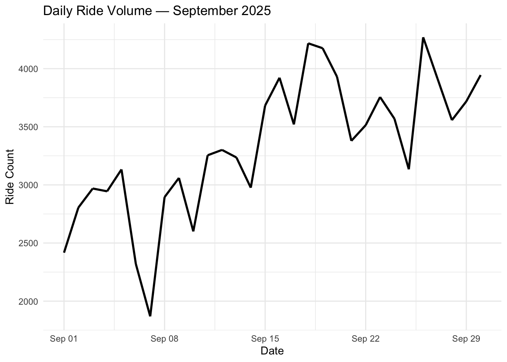
=======3. Daily Aggregates
The table below shows the basic format of daily aggregated ride data. Further analysis is based on this.
daily <- bike %>%
group_by(start_date) %>%
summarise(
total_rides = n(),
ride_duration_hours = ride_duration_hours,
avg_duration = mean(ride_duration_hours, na.rm = TRUE),
member_rides = sum(member_casual == "member"),
casual_rides = sum(member_casual == "casual"),
tmax = tmax,
prcp = prcp
)
kable(head(daily, 10), caption = "Daily Overview") %>%
kable_styling(bootstrap_options = "striped",
full_width = FALSE,
position = "center")| start_date | total_rides | ride_duration_hours | avg_duration | member_rides | casual_rides | tmax | prcp |
|---|---|---|---|---|---|---|---|
| 2025-09-01 | 2417 | 0.0606972 | 0.2584018 | 1691 | 726 | 78 | 0 |
| 2025-09-01 | 2417 | 0.1243283 | 0.2584018 | 1691 | 726 | 78 | 0 |
| 2025-09-01 | 2417 | 0.0460903 | 0.2584018 | 1691 | 726 | 78 | 0 |
| 2025-09-01 | 2417 | 0.1965408 | 0.2584018 | 1691 | 726 | 78 | 0 |
| 2025-09-01 | 2417 | 0.3333336 | 0.2584018 | 1691 | 726 | 78 | 0 |
| 2025-09-01 | 2417 | 0.5045014 | 0.2584018 | 1691 | 726 | 78 | 0 |
| 2025-09-01 | 2417 | 0.0681506 | 0.2584018 | 1691 | 726 | 78 | 0 |
| 2025-09-01 | 2417 | 0.2391419 | 0.2584018 | 1691 | 726 | 78 | 0 |
| 2025-09-01 | 2417 | 0.1930531 | 0.2584018 | 1691 | 726 | 78 | 0 |
| 2025-09-01 | 2417 | 0.1152025 | 0.2584018 | 1691 | 726 | 78 | 0 |
4. Daily Ride Volume
p_daily_rides <- ggplot(daily, aes(x = start_date, y = total_rides)) +
geom_line(color = "skyblue", size = 1, lineend = "round") +
geom_point(color = "lightpink", size = 2) +
labs(title = "Daily Ride Volume — September 2025",
x = "Date", y = "Ride Count") +
theme_minimal()
p_daily_rides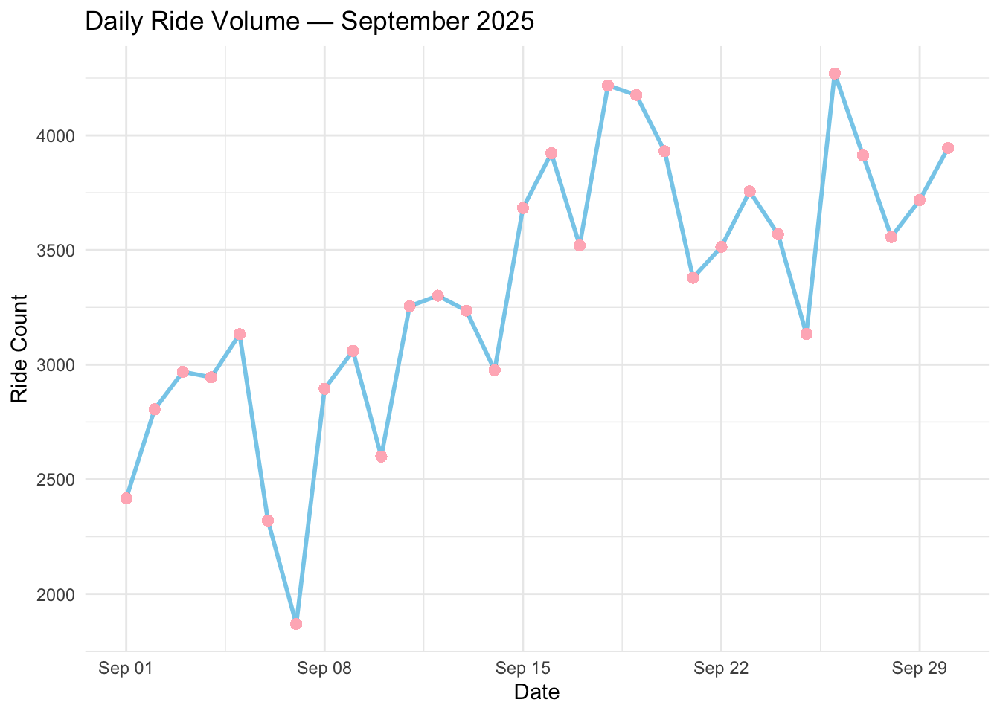
The line chart shows the daily ride volume for Citi Bike in September 2025, with ride counts ranging around 2000 to 4000 per day.
Key trend: There is a clear upward trend in ride volume from the start of the month, with the lowest point on September 8 (around 2000 rides) and multiple peaks later in the month (e.g., mid September and late September, both exceeding 4000 rides).
Variability: Daily ride counts fluctuate noticeably, suggesting factors like weather, weekdays vs. weekends, or events may be influencing how many people use the bikes each day.
5. Member vs Casual Ride Patterns
4.1 Daily Average Duration
dur_ts <- bike %>%
group_by(start_date, member_casual) %>%
summarise(mean_duration = mean(ride_duration_hours, na.rm = TRUE))## `summarise()` has grouped output by 'start_date'. You can override using the `.groups` argument.ggplot(dur_ts, aes(start_date, mean_duration, color = member_casual)) +
geom_line(size = 1) +
labs(title = "Daily Average Ride Duration — Member vs Casual",
x = "Date", y = "Duration (hours)") +
theme_minimal()4.2 Hourly Ride Count
## `summarise()` has grouped output by 'hour', 'member_casual'. You can override using the `.groups` argument.ggplot(hourly, aes(hour, rides, color = member_casual)) +
geom_line(size = 1) +
facet_wrap(~ weekend_and_holiday) +
labs(title = "Hourly Ride Patterns — Member vs Casual (Weekday vs Weekend)",
x = "Hour of Day", y = "Ride Count") +
theme_minimal()
4.3 Day of Week Pattern
wday_daily <- bike %>%
group_by(wday, user_type) %>%
summarise(rides = n(), .groups = "drop") %>%
mutate(wday = factor(wday, levels = c("Mon","Tue","Wed","Thu","Fri","Sat","Sun")))
p_wday <- ggplot(wday_daily, aes(x = wday, y = rides, fill = user_type)) +
geom_col(position = "dodge") +
labs(title = "Ridership by Day of Week (member vs casual)",
x = "Day of Week", y = "Ride Count", fill = "User Type") +
theme_minimal()
p_wday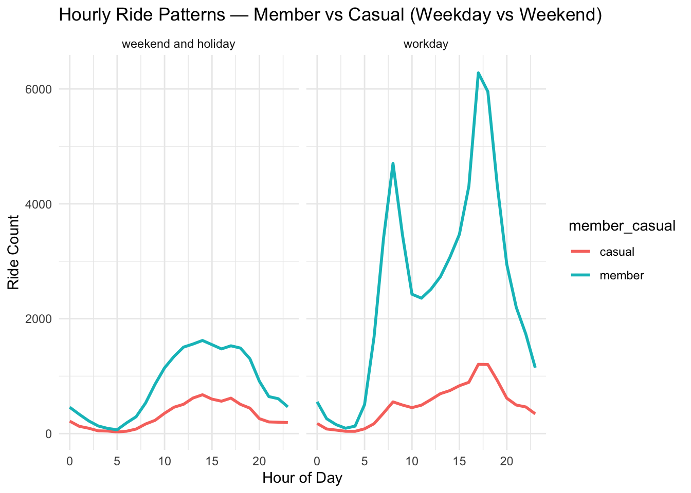
=======5.1 Daily Average Duration
dur_ts <- bike %>%
group_by(start_date, member_casual) %>%
summarise(mean_duration = mean(ride_duration_hours, na.rm = TRUE))
ggplot(dur_ts, aes(start_date, mean_duration, color = member_casual)) +
geom_line(size = 1) +
labs(title = "Daily Average Ride Duration — Member vs Casual",
x = "Date", y = "Duration (hours)") +
theme_minimal()
This line chart compares the daily average ride duration (in hours) between casual (red line) and member (teal line) Citi Bike users in September 2025.
Casual users consistently have longer average ride duration (ranging from 0.3 to over 0.4 hours), with a notable spike in late September.
Member users have much shorter and more stable average ride duration (around 0.2 hours), showing minimal fluctuation throughout the month.
The gap between casual and member ride duration remains significant across all days, indicating that casual users tend to take longer, more leisurely rides, while members use bikes for shorter, more routine trips.
5.2 Hourly Ride Count
hourly <- bike %>%
group_by(hour, member_casual, weekend_and_holiday) %>%
summarise(rides = n())
ggplot(hourly, aes(hour, rides, color = member_casual)) +
geom_line(size = 1) +
facet_wrap(~ weekend_and_holiday) +
labs(title = "Hourly Ride Patterns — Member vs Casual (Weekday vs Weekend)",
x = "Hour of Day", y = "Ride Count") +
theme_minimal()This faceted line chart compares hourly ride counts between casual (red line) and member (teal line) Citi Bike users, split by weekends/holidays (left panel) and workdays (right panel).
Members primarily use bikes for weekday commutes, while casual users’ ride patterns are more consistent across weekends and workdays (with low overall activity on workdays).
5.3 Day of Week Pattern
wday_daily <- bike %>%
group_by(wday, user_type) %>%
summarise(rides = n(), .groups = "drop") %>%
mutate(wday = factor(wday, levels = c("Mon","Tue","Wed","Thu","Fri","Sat","Sun")))
p_wday <- ggplot(wday_daily, aes(x = wday, y = rides, fill = user_type)) +
geom_col(position = "dodge") +
labs(title = "Ridership by Day of Week (member vs casual)",
x = "Day of Week", y = "Ride Count", fill = "User Type") +
theme_minimal()
p_wday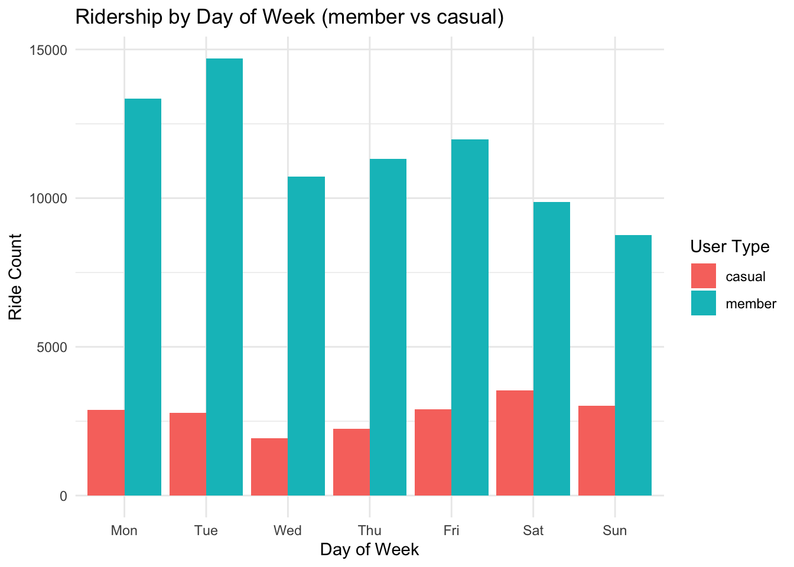
>>>>>>> 109e83c6f1c776338ff49e35a5e7540510b9ec61As shown in the bar chart, it is clear that member users have much higher ride counts than casual users.
Specifically, member ride counts are particularly high on Mondays and Tuesdays and reach their lowest on weekends.
In contrast, casual users’ ride counts are relatively consistent throughout the week, with slightly higher numbers on weekends. The observation confirms the previous conclusion.
<<<<<<< HEADp_dur_group <- bike %>%
group_by(member_casual, weekend_and_holiday) %>%
summarise(
mean_duration = mean(ride_duration_hours, na.rm = TRUE)
) %>%
ggplot(aes(x = weekend_and_holiday, y = mean_duration,
fill = member_casual)) +
geom_col(position = "dodge") +
labs(title = "Average Ride Duration — Member vs Casual across Weekday/Weekend",
x = "Day Type", y = "Duration (hours)") +
theme_minimal()## `summarise()` has grouped output by 'member_casual'. You can override using the `.groups` argument.p_dur_group <- bike %>%
group_by(member_casual, weekend_and_holiday) %>%
summarise(
mean_duration = mean(ride_duration_hours, na.rm = TRUE)
) %>%
ggplot(aes(x = weekend_and_holiday, y = mean_duration,
fill = member_casual)) +
geom_col(position = "dodge") +
labs(title = "Average Ride Duration — Member vs Casual across Weekday/Weekend",
x = "Day Type", y = "Duration (hours)") +
theme_minimal()
p_dur_group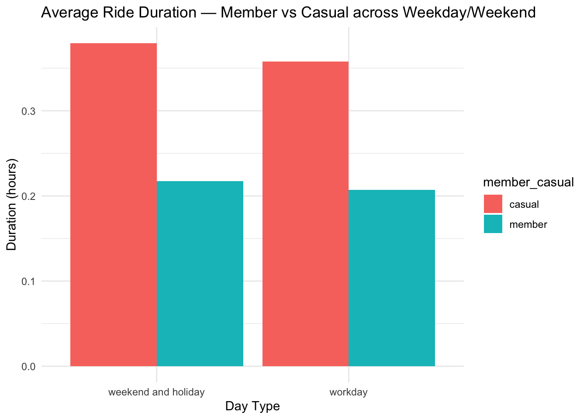
>>>>>>> 109e83c6f1c776338ff49e35a5e7540510b9ec615. Time Series of Average Ride Duration
dur_ts <- bike %>%
group_by(start_date, member_casual) %>%
summarise(mean_duration = mean(ride_duration_hours, na.rm = TRUE))## `summarise()` has grouped output by 'start_date'. You can override using the `.groups` argument.p_dur_ts <- ggplot(dur_ts, aes(start_date, mean_duration, color = member_casual)) +
geom_line(size = 1) +
labs(title = "Daily Average Ride Duration — Member vs Casual",
x = "Date", y = "Duration (hours)") +
theme_minimal()
p_dur_ts6. Time Series of Average Ride Duration
dur_ts <- bike %>%
group_by(start_date) %>%
summarise(mean_duration = mean(ride_duration_hours, na.rm = TRUE))
p_dur_ts <- ggplot(dur_ts, aes(start_date, mean_duration)) +
geom_line(color = "skyblue", size = 1, lineend = "round") +
geom_point(color = "lightpink", size = 2) +
labs(title = "Daily Average Ride Duration",
x = "Date", y = "Duration (hours)") +
theme_minimal()
p_dur_ts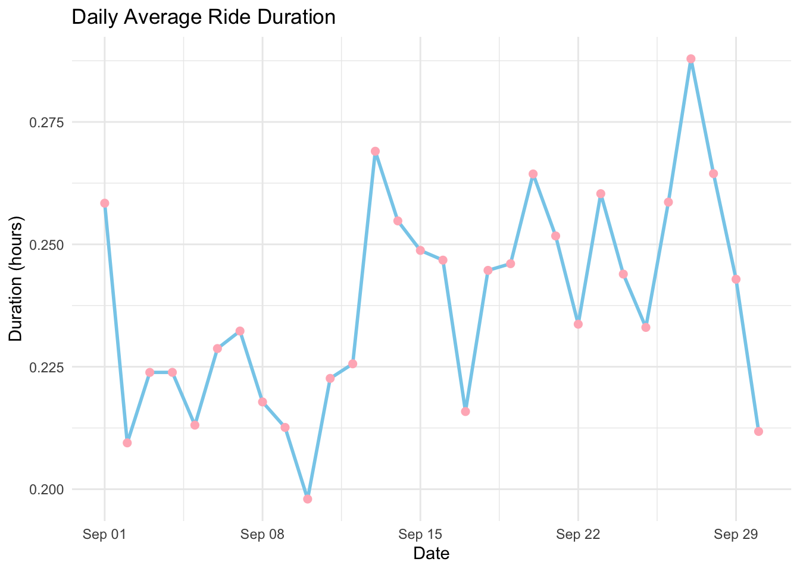
This line chart shows the daily average ride duration (in hours) for September 2025, with values ranging from 0.20 to just over 0.275 hours. The duration fluctuates slightly across the month, with the lowest point on September 8 and the highest peak in late September, indicating small day-to-day changes in how long rides lasted.
>>>>>>> 109e83c6f1c776338ff49e35a5e7540510b9ec617. Weather Effects
6.1 Ride Count vs Temperature Level Category
p_temp_level <- bike %>%
group_by(start_date, temp_level_category) %>%
summarise(rides = n()) %>%
ggplot(aes(temp_level_category, rides)) +
geom_boxplot() +
labs(title = "Ride Counts by Temperature Level Category",
x = "Temperature Category", y = "Daily Ride Count") +
theme_minimal()## `summarise()` has grouped output by 'start_date'. You can override using the `.groups` argument.This plot shows that higher temperatures are associated with increased ridership.
6.2 Ride Count vs Rain Category
p_rain <- bike %>%
group_by(start_date, rain_category) %>%
summarise(rides = n()) %>%
ggplot(aes(rain_category, rides)) +
geom_boxplot() +
labs(title = "Ride Counts by Rain Category",
x = "Rain Category", y = "Daily Ride Count") +
theme_minimal()## `summarise()` has grouped output by 'start_date'. You can override using the `.groups` argument.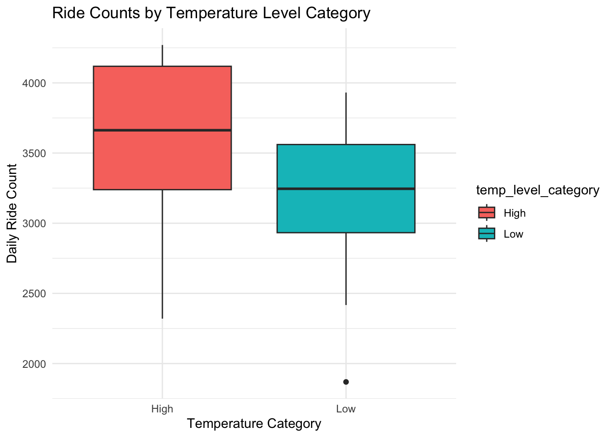
The analysis reveals a negative correlation between rainfall and ridership.
6.3 Weather Variables
# tmax
ggplot(daily, aes(x = tmax, y = total_rides)) +
geom_point(alpha = .4) +
geom_smooth(method = "loess") +
labs(title = "Ride Count vs Daily Maximum Temperature",
x = "tmax", y = "Rides") +
theme_minimal()## `geom_smooth()` using formula = 'y ~ x'## Warning: Failed to fit group -1.
## Caused by error in `predLoess()`:
## ! workspace required (14996775205) is too large probably because of setting 'se = TRUE'.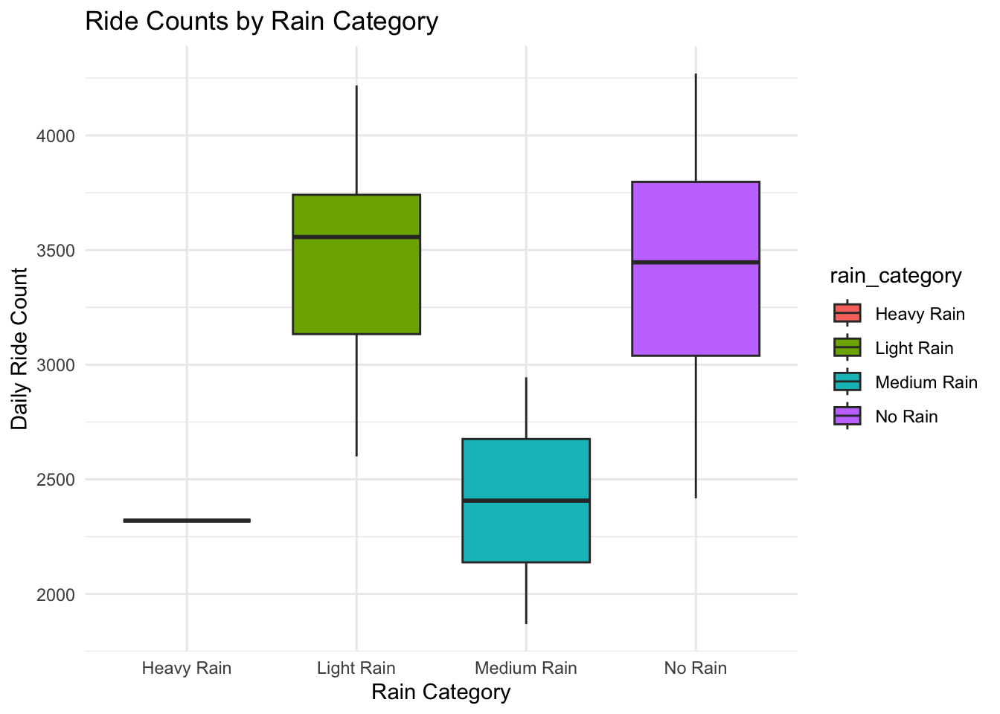
# prcp
ggplot(daily, aes(x = prcp, y = total_rides)) +
geom_point(alpha = .4) +
geom_smooth(method = "loess") +
labs(title = "Ride Count vs Precipitation",
x = "Precipitation (mm)", y = "Rides") +
theme_minimal()## `geom_smooth()` using formula = 'y ~ x'## Warning in simpleLoess(y, x, w, span, degree = degree, parametric = parametric, : pseudoinverse used at -0.00505## Warning in simpleLoess(y, x, w, span, degree = degree, parametric = parametric, : neighborhood radius 0.01505## Warning in simpleLoess(y, x, w, span, degree = degree, parametric = parametric, : reciprocal condition number 7.1893e-25## Warning in simpleLoess(y, x, w, span, degree = degree, parametric = parametric, : There are other near singularities as well.
## 0.0001## Warning: Failed to fit group -1.
## Caused by error in `predLoess()`:
## ! workspace required (14996775205) is too large probably because of setting 'se = TRUE'.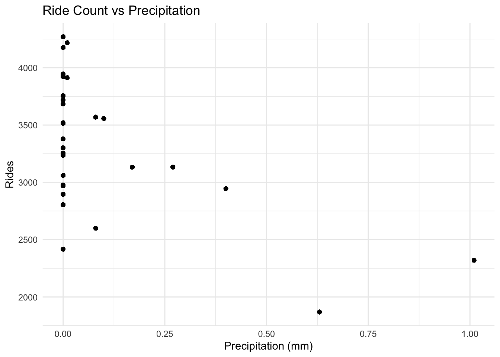
7. Bike Type Analysis
p_type <- bike %>%
group_by(start_date, rideable_type) %>%
summarise(rides = n()) %>%
ggplot(aes(rideable_type, rides)) +
geom_boxplot() +
labs(title = "Ride Duration by Bike Type",
x = "Bike Type", y = "Ride Counts") +
theme_minimal()## `summarise()` has grouped output by 'start_date'. You can override using the `.groups` argument.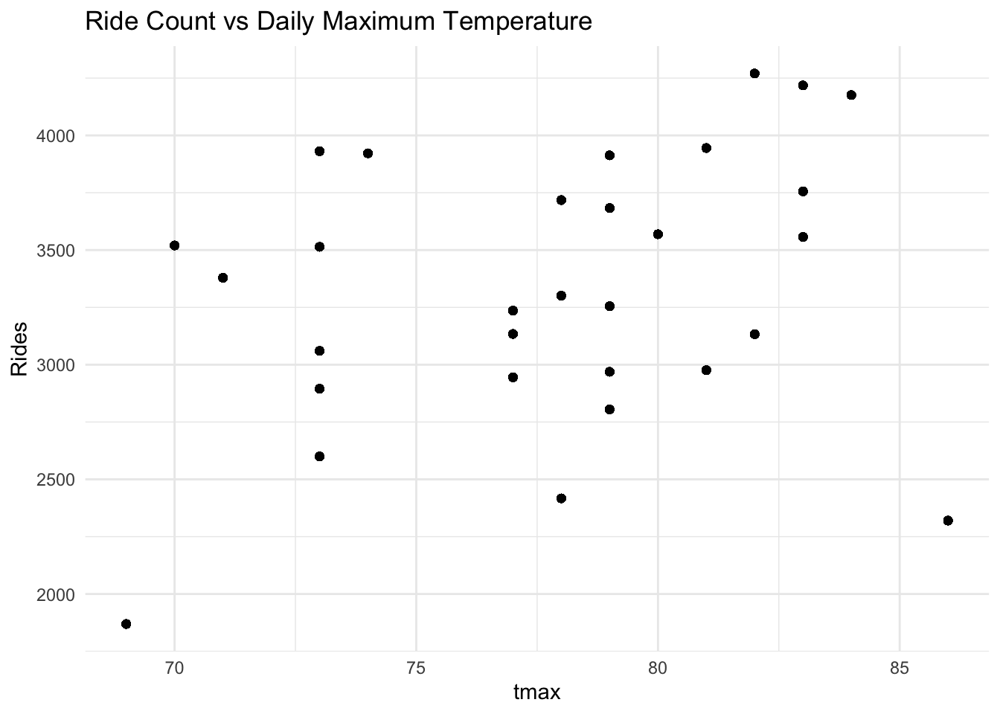
8. Time Series Analysis
##
## 'tseries' version: 0.10-58
##
## 'tseries' is a package for time series analysis and computational finance.
##
## See 'library(help="tseries")' for details.daily_rides <- bike %>%
group_by(start_date) %>%
summarise(total_rides = n(), .groups = "drop")
library(tsibble)
library(fable)
ts_data <- daily_rides %>%
as_tsibble(index = start_date)
autoplot(ts_data, total_rides) +
labs(title = "Daily Ride Counts",
x = "Date",
y = "Number of Rides")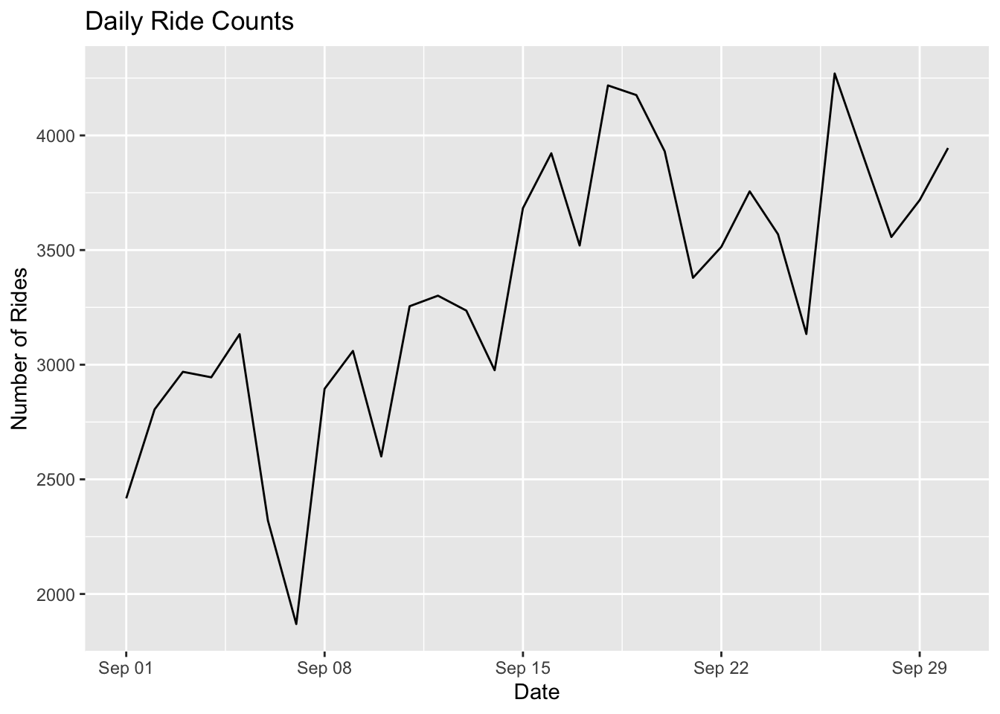
=======7.1 Ride Count vs Temperature Level Category
p_temp_level <- bike %>%
group_by(start_date, temp_level_category) %>%
summarise(rides = n(), .groups = "drop") %>%
ggplot(aes(temp_level_category, rides, fill = temp_level_category)) +
geom_boxplot() +
labs(title = "Ride Counts by Temperature Level Category",
x = "Temperature Category", y = "Daily Ride Count") +
theme_minimal()
p_temp_levelThis boxplot compares daily ride counts across “High” and “Low” temperature categories.
High temperature is associated with slightly higher median daily ride counts and a wider range of values (with a longer whisker extending downward).
Low temperature has a lower median ride count and one noticeable low-value outlier, suggesting fewer rides on some cold days.
Overall, higher temperatures correspond to slightly more consistent and higher daily ride counts than lower temperatures.
7.2 Ride Count vs Rain Category
p_rain <- bike %>%
group_by(start_date, rain_category) %>%
summarise(rides = n(), .groups = "drop") %>%
ggplot(aes(rain_category, rides, fill = rain_category)) +
geom_boxplot() +
labs(title = "Ride Counts by Rain Category",
x = "Rain Category", y = "Daily Ride Count") +
theme_minimal()
p_rainThis boxplot examines daily ride counts across four rain categories (Heavy Rain, Light Rain, Medium Rain, No Rain).
Heavy Rain has the lowest median daily ride count and the smallest range, showing very few rides on days with heavy rain.
No Rain and Light Rain have the highest median ride counts, with No Rain showing slightly more variability in values.
Medium Rain falls in the middle, with a lower median ride count than No Rain and Light Rain but higher than Heavy Rain.
Overall, the chart clearly shows that rain, especially heavy rain, leads to fewer daily bike rides, while no rain or light rain is associated with the most rides.
7.3 Weather Variables
# tmax
ggplot(daily, aes(x = tmax, y = total_rides)) +
geom_point(alpha = .4) +
geom_smooth(method = "loess") +
labs(title = "Ride Count vs Daily Maximum Temperature",
x = "tmax", y = "Rides") +
theme_minimal()# prcp
ggplot(daily, aes(x = prcp, y = total_rides)) +
geom_point(alpha = .4) +
geom_smooth(method = "loess") +
labs(title = "Ride Count vs Precipitation",
x = "Precipitation (mm)", y = "Rides") +
theme_minimal()
8. Bike Type Analysis
p_type <- bike %>%
group_by(start_date, rideable_type) %>%
summarise(rides = n(), .groups = "drop") %>%
ggplot(aes(rideable_type, rides, fill = rideable_type)) +
geom_boxplot() +
labs(title = "Ride Duration by Bike Type",
x = "Bike Type", y = "Ride Counts") +
theme_minimal()
p_typeThis boxplot compares daily ride counts for two bike types: classic bikes and electric bikes.
Electric bikes have a significantly higher median daily ride count and a much wider range of values (with a long whisker extending downward), showing far more frequent use overall.
Classic bikes have a lower median ride count and one noticeable low-value outlier, indicating less consistent and lower daily usage compared to electric bikes.
Overall, the chart clearly shows that electric bikes are used much more heavily than classic bikes, with a larger volume of daily rides and greater variability in usage.
9. Time Series Analysis
In this section, we will attempt to perform time series analysis on the ride data. After that, we fit an ARIMA model to predict future ride volume.
9.1 Model Fitting and Prediction
library(tseries)
daily_rides <- bike %>%
group_by(start_date) %>%
summarise(total_rides = n(), .groups = "drop")
library(tsibble)
library(fable)
ts_data <- daily_rides %>%
as_tsibble(index = start_date)
autoplot(ts_data, total_rides) +
labs(title = "Daily Ride Counts",
x = "Date",
y = "Number of Rides") +
geom_line(linewidth = 1.2, color = "skyblue") +
theme_minimal() 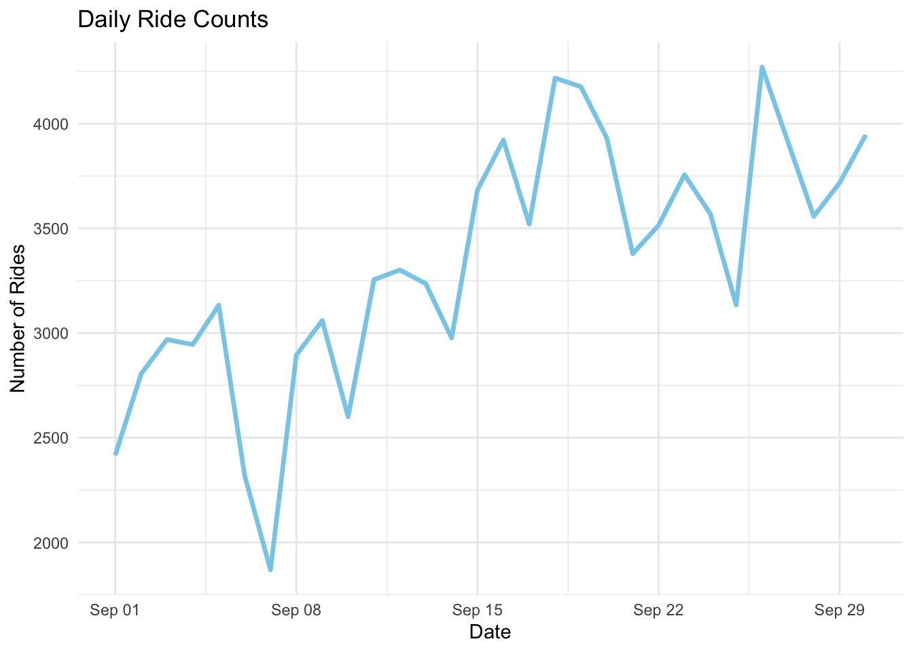
>>>>>>> 109e83c6f1c776338ff49e35a5e7540510b9ec61## Series: total_rides
## Model: ARIMA(0,1,1)(1,0,0)[7]
##
## Coefficients:
## ma1 sar1
## -0.4548 0.4685
## s.e. 0.1922 0.2006
##
## sigma^2 estimated as 159701: log likelihood=-214.82
## AIC=435.64 AICc=436.6 BIC=439.74fc <- fit_arima %>% forecast(h = 7)
autoplot(fc, ts_data) +
labs(title = "ARIMA Forecast of Daily Rides",
x = "Date",
y = "Number of Rides")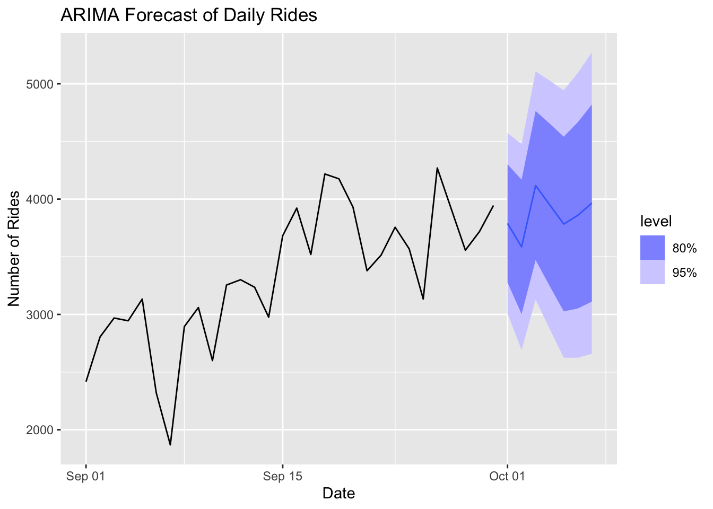
8.1 Decomposition
fit_ets <- ts_data %>% model(ETS(total_rides))
components_plot <- autoplot(components(fit_ets)) +
labs(
title = "ETS Decomposition of Daily Ride Counts",
subtitle = "Using Exponential Smoothing (suitable for short, non-periodic series)",
x = "Date",
y = "Value"
) +
theme_minimal()
components_plot## Warning: Removed 1 row containing missing values or values outside the scale range (`geom_line()`).fc <- fit_arima %>% forecast(h = 7)
autoplot(fc, ts_data) +
labs(title = "ARIMA Forecast of Daily Rides",
x = "Date",
y = "Number of Rides") +
theme_minimal()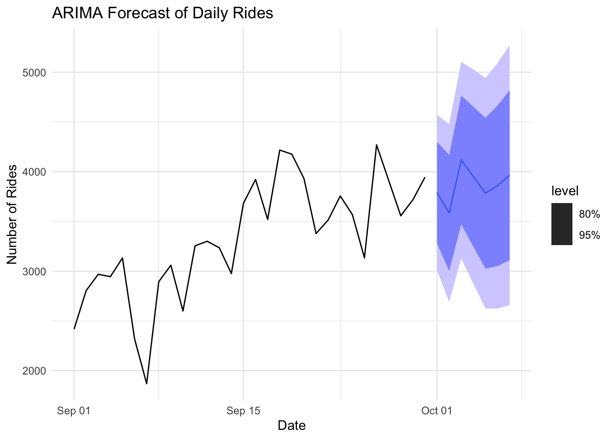
9.2 Decomposition
fit_ets <- ts_data %>% model(ETS(total_rides))
components_plot <- autoplot(components(fit_ets)) +
labs(
title = "ETS Decomposition of Daily Ride Counts",
subtitle = "Using Exponential Smoothing (suitable for short, non-periodic series)",
x = "Date",
y = "Value"
) +
theme_minimal()
components_plot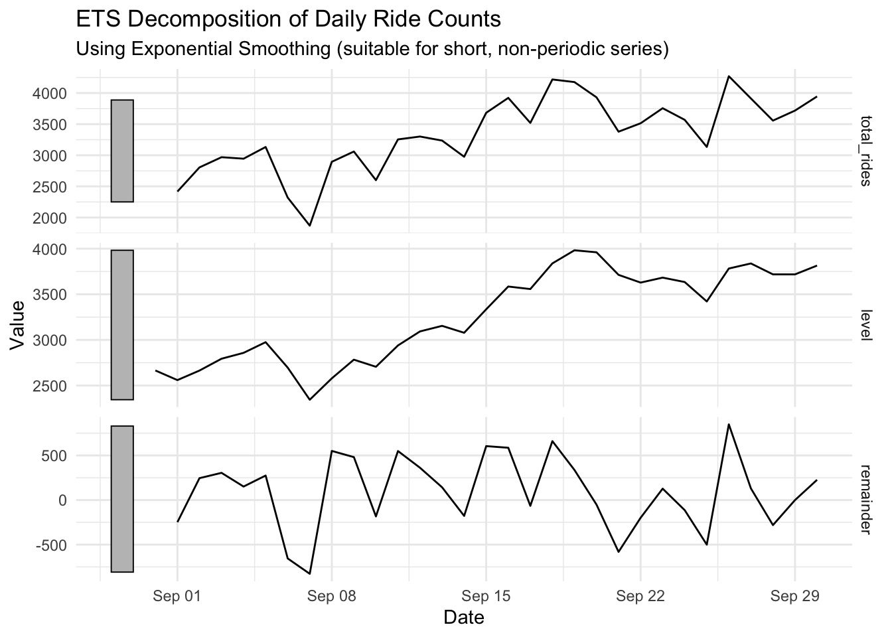
This ETS decomposition chart breaks down daily ride counts into three components:
Total rides (top panel): Shows the overall trend of increasing daily ride counts through September, with small day-to-day fluctuations.
Level (middle panel): Reflects the underlying smooth trend of ride counts, which rises steadily and follows the overall upward direction of the raw data.
Remainder (bottom panel): Shows the residual variation after removing the trend—these small, random fluctuations indicate no strong unaccounted for patterns, meaning the ETS model captures the main trend well.
Overall, the decomposition suggests daily ride counts have a clear upward trend in September, with only minor random variation left after accounting for this trend.
Summary
- Member and casual riders display distinct daily and
weekend/weekday patterns.
- Daily ride volume shows clear temporal trends
across September.
- Temperature and rainfall strongly shape both trip
volume.
- Time-series decomposition reveals trend + seasonality suitable for forecasting.